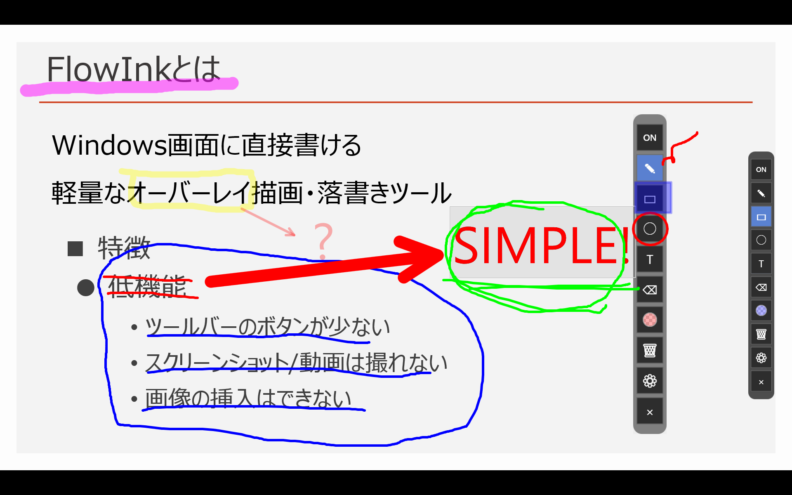
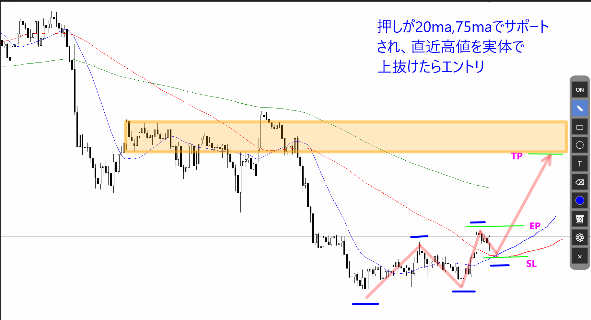
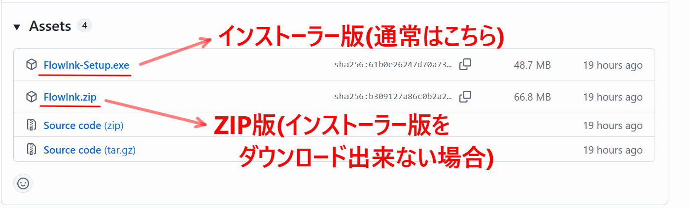
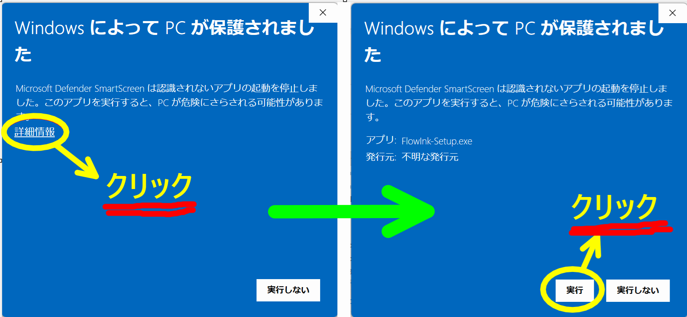
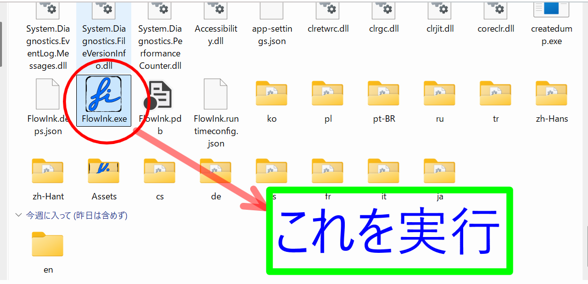
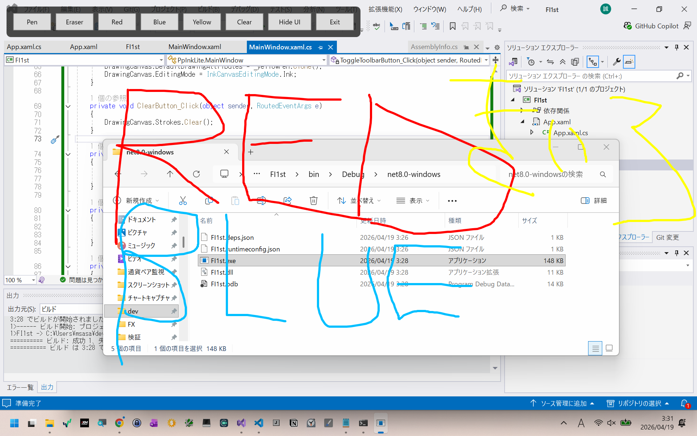

FlowInk
Windows画面に直接描ける
軽量なオーバーレイ描画・落書きツール
特長
余計な操作を増やさず、必要な機能をすぐ使えることを重視した設計です。
デスクトップ画面の上にそのまま書き込めるので、説明や確認が直感的です。
最小構成のUIで、迷いにくく、起動してすぐ使い始められます。
線や図形だけでなく、補足説明やラベルもその場で追加できます。
重たいセットアップなしで、必要なときにすぐ立ち上げて使えます。
こんな用途に
ちょっと書き込みたい場面に、手早く使えるツールです。
表示／共有している画面に直接直接書き込みできます。
一時的な書き込みや補足メモを画面上に残せます。
デイトレード等のチャート画面にラインや矢印などを記入できます。
使用例


ツールバーの各ボタンの説明
左クリックで主な操作を選択または実行します。右クリックで対応している設定・メニュー・プリセットを開きます。
左クリックで描画のオン／オフを切り替えます。描画がオフのときは、FlowInkの背後にあるウィンドウを操作できます。描画がオフになるとツールバーは折りたたまれます。これは Ctrl+Alt+T を押したときと同じ操作です。
マウスの左ボタンを押してドラッグすると線を描画できます。Shiftキーを押しながらドラッグすると直線、Shift+Altキーで矢印を描画できます。ペンボタンにカーソルを合わせてマウスの右ボタンをクリックすると線幅のプリセットポップアップが開いて線幅を変更できます。また、プリセットの線を右クリックするとプリセットの線幅を変更できます。

マウスの左ボタンをクリックしてドラッグすると四角形を描画できます。四角形ボタンにカーソルを当てて右クリックすると塗りつぶし／塗りつぶす色の透明度を変更できます。

マウスの左ボタンをクリックしてドラッグすると円を描画できます。円ボタンにカーソルを当てて右クリックすると塗りつぶし／塗りつぶす色の透明度を変更できます。

キーボードからテキストが入力できます。Enterで文字列確定、Shift+Enterでテキストボックス内で改行できます。テキストボタンを右クリックするとフォントを変更できます。入力したテキストをクリックするとテキスト選択状態となり、ドラッグするとテキストを移動できます。また、テキストにカーソルを当てて右クリックするとテキストの編集／削除ができます。
マウスの左ボタンを押しっぱなしにすることで、描いた線／円／四角をカーソルで消せます、ただしテキストは消せません。テキストボタンを右クリックすると消しゴム幅プリセットメニューが開き、消しゴム幅が変更できます。また、プリセットの消しゴム幅を右クリックするとプリセット値を変更できます。
描画色を変更できます。マウスの左ボタンをクリックすると、色選択ポップアップが開きます。選択することで描画色を変更できます。プリセットカラーの各色タイルを右クリックするとプリセットの色を変更できます。色ボタンを右クリックすると現在の色を変更できます。
左クリックでUndo、右クリックでRedoができます。
画面上に描いた内容をすべて消去します。テキストも消去されます。

描画ON/OFFができるグローバルホットキーを設定できます。デフォルトはCtrl+Alt+Tです。

FlowInkを終了します。
その他の機能
ツールバーボタン以外の機能です。
- Ctrl + Alt + T で描画ON/OFFを切り替えられます。設定ボタンでキーの組み合わせを変更できます
- ペンボタン選択時、Shiftキーで直線、Shift + Altキーで矢印を描画できます
- Ctrl-z / Ctrl-yでUndo / Redoができます。履歴は200です
- テキスト入力時にEnterで文字列確定。Shifet+Enterで改行できます
- テキスト入力時に Ctrl + マウスホイールの上下で文字サイズを拡大・縮小できます
- ツールバーの余白をつかむと移動できます。(余白にカーソルを合わせて左ボタンクリックでドラッグ)
- 図形や文字列上で右クリックすると、メニューが開き、選択(移動)や編集(文字列のみ)ができます。
FlowInkを試す
必要なときにすぐ起動して、画面上にすぐ書ける。
まずはダウンロードして、使い心地を試してみてください。
ダウンロード方法
- ダウンロードボタンをクリックします
- 表示されたページの「Assets」（ダウンロード一覧）から以下のファイルをダウンロードしてください
- FlowInk-Setup.exe（通常はこちら / インストーラー版）
- FlowInk.zip（インストーラー版がダウンロードできない場合 / ZIP版）
※ インストーラー版はブラウザによりダウンロードがブロックされる場合があります。その時はZIP版をダウンロードしてください。
※ 「Source code」と書かれたZIPではありません。

インストール方法
FlowInk-Setup.exe（インストーラー版）
- (無事に)FlowInk-Setup.exeがダウンロードできた方は、ダブルクリックで実行してください。インストーラーが起動しますので、それに従ってインストールしてください
- インストーラー実行時にWindowsのPC保護画面が表示される場合があります。その場合はPC保護画面の詳細リンクをクリックし、実行ボタンを押してください

FlowInk.zip(ZIP版)
- ZIPファイルを右クリックし「すべて展開」より、展開されたファイル内のFlowInk.exeを実行してください
- 初回のFlowInk.exe実行時にWindowsのPC保護画面が表示される場合があります。その場合はPC保護画面の詳細リンクをクリックし、実行ボタンを押してください

FlowInkを開発した経緯
FXやCFDのテクニカルデイトレーダーにとってMT4やMT5のチャートソフトの画面に線や文字を書き込む落書きツールは必須です。 Epic Penはデファクトスタンダードとして多くのトレーダーに使われていますが、少し前にサブスクになりました。 必須なツールとはいえ、たかだが落書きソフトにサブスクって？(OfficeやAcrobatならともかく)、 安いとは言え、使わなくなっても契約解除しない限り(忘れたら)一生お金を払い続けるの？ となにか釈然としない。 と言うことで代替ソフトを探したところginkと言うフリーのソフトを見つけました。 ginkこれはこれで多機能だが、なーんか挙動がおかしく不安定。 さらに最近は起動時に例外を吐いて起動できないバージョンもありでストレスが溜まっていました。 幸いgink はソースが公開されており、チャッピー(ChatGPT)を相手に中身を調べていたんですが、 チャッピー曰く設計が古い、WPFで書き直して云々ってなことを言ってくるので、 WPFで書き直すチャレンジをしたけどコンパイルエラーを吐きまくるわ、 チャッピーは自分の言ったことを忘れて聞くたびに違うコードを吐くわで、ginkを改良することはあきらめました。
その後しばらくして(あらためて)チャッピーに相談したところ、WPFで新たに書き直すのが早いとかいうので、 試しにコードを書いてもらったところ、こちらはサクッと簡単な落書きできるソフトを仕上げてきました。 そうなるとこっちも盛り上がって機能を追加していきました。
こうして出来上がったのが、FlowInkです。

このような経緯なので、FlowInkはデイトレーダーがginkやEpic Penの代替ソフトウェアとして使える最低限の機能を持たせています。
- 直線や矢印が簡単に引ける
- サポート／レジスタンス帯の長方形(塗りつぶし)
- 色の透明度の設定(下のチャートが見えるように)
- テキスト入力
- 線幅、色をプリセットしておける
- ツールバーの余白をつかむと移動できます。(余白にカーソルを合わせて左ボタンクリックでドラッグ)
同じく、プレゼンやオンラインミーティングの画面説明にもシンプルで使いやすいかと。
ぜひ使ってみてください。
フィードバック・お問い合わせ
FlowInkの改善のため、ご意見・不具合報告・ご要望などをお待ちしています。
📩 dev.sasaya@gmail.com
𝕏 @m338
wiki: https://github.com/msasa-alt/FlowInk/wiki
- 発生した内容
- 操作手順
- スクリーンショット（あれば）
- 使用環境（Windowsバージョンなど）